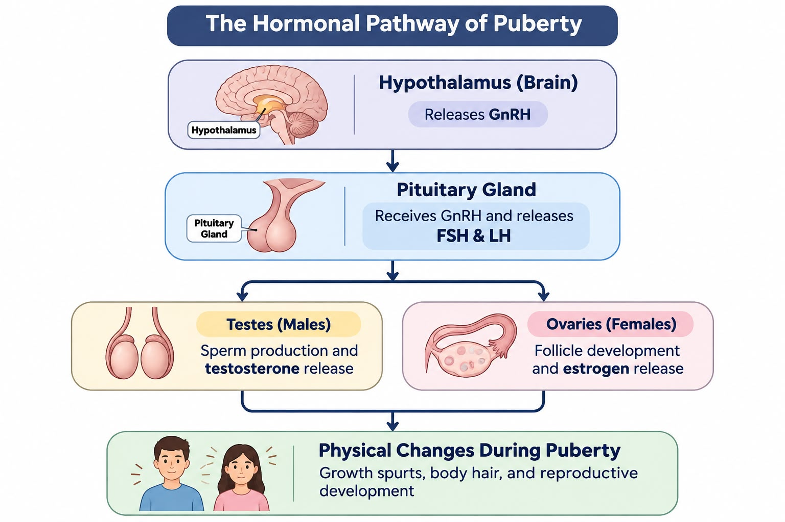

Fertilization and the Cellular Journey
Article Made By Russell S.
Overview
The process of fertilization takes place in the fallopian tube when two haploid cells—a sperm cell and an egg cell—unite. Both have 23 chromosomes that contain genetic information from the mother and father.
The Sperm and Egg Cells
The sperm cell and egg cell are haploid, meaning that each contains 23 chromosomes. These chromosomes carry genetic information from the biological parents. During fertilization, the sperm cell passes through the layers surrounding the egg and fuses with the egg's cell membrane.
How Does Fertilization Happen?
Fertilization occurs in the fallopian tube when a sperm cell reaches and penetrates the egg. The sperm cell passes through the layers surrounding the egg and fuses with the egg's cell membrane. Changes then occur in the egg's membrane, helping prevent additional sperm cells from penetrating it.
From Haploid to Diploid
The genes in the egg and sperm cells unite, restoring the diploid number of chromosomes to 46. The resulting cell is called a zygote. It contains a unique combination of genetic information from both biological parents.
Cell Division and Early Development
Through mitosis, the zygote divides into multiple cells. As these cells continue to divide, the developing embryo moves through the fallopian tube toward the uterus, where it can implant into the uterine wall.

Conclusion
Fertilization occurs when a haploid sperm cell and a haploid egg cell unite in the fallopian tube. Each cell contributes 23 chromosomes, restoring the diploid number to 46 and forming a zygote with a unique combination of genes from both parents. The zygote then divides through mitosis, and the developing embryo moves toward the uterus, where it can implant into the uterine wall.